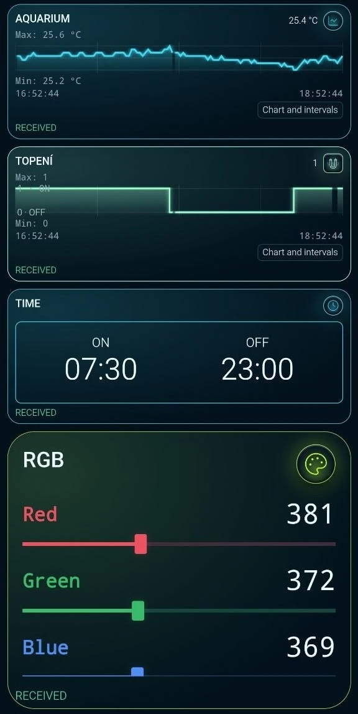
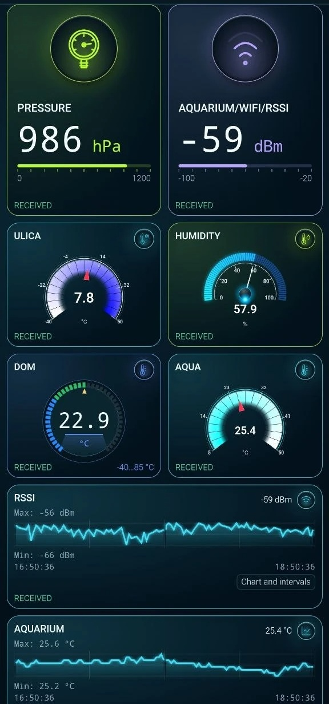

Аквариум на планшете: температура воды и циклы нагрева
На термометре 25,4 °C. Чтобы понять, как вода дошла до этой температуры, откройте два графика за одни и те же два часа: температуру и состояние нагревателя.
Рабочая панель аквариума
На снимке владельца с 16:52 до 18:52 температура менялась от 25,2 до 25,6 °C. На нижней ступенчатой линии видно, когда панель получила состояние «включён» и когда — «выключен». Выберите момент переключения и проследите, как меняется наклон температурной кривой после него.




Повторяем без аквариума
Понадобятся компьютер с Python 3, планшет или телефон с ARAAMA и MQTT-брокер в локальной сети. Для отправки с компьютера установите клиент Mosquitto: команда mosquitto_pub должна быть доступна из терминала. Архив содержит генератор и готовую панель. В учебном проекте две шкалы истории и две карточки текущих показаний; расписание и RGB относятся к реальной установке.
Скачать генератор и панель (ZIP)
Первое сообщение без брокера
Распакуйте архив, откройте терминал в его папке и выполните команду. Она напечатает топик и одно сообщение, затем завершится.
python simulate.py --count 1
lab/aquarium/state {"water_temperature_c":25.52,"heater_on":1}Передаём показания на планшет
Замените пример адреса на адрес своего брокера. Терминал оставьте открытым: раз в пять секунд генератор публикует температуру и состояние. Если брокер требует пароль, настройте учётные данные в локальной конфигурации mosquitto_pub и в ARAAMA.
python simulate.py --host 192.168.1.20
В ARAAMA экспортируйте текущий проект. Затем откройте «Настройки» → «Проекты», импортируйте panel.json и в разделе «Сеть» замените broker.example адресом того же брокера. Нажмите «Запуск» и сравните показания на экране со строкой в терминале.
Как читать учебную панель
Температура привязана к полю $.water_temperature_c (°C), а состояние — к $.heater_on (1 — включён, 0 — выключен). Для обоих графиков задано окно в два часа. Модель начинает с включённым нагревом, отключает его при 25,6 °C и снова включает при 25,2 °C. Скорость нагрева и охлаждения меняется постепенно. Первый переход в OFF появится примерно через минуту. Это параметры демонстрации; программа публикует только показания и не отправляет команд оборудованию.

Для остановки нажмите Ctrl+C. Если собирать экран вручную, откройте «Поиск MQTT», выберите два поля, сохраните каждое как тег и привяжите к нему карточку и график. Готовая панель проверена в 0.1.10; для небольшого MQTT-проекта доступна и облегчённая 0.1.5.